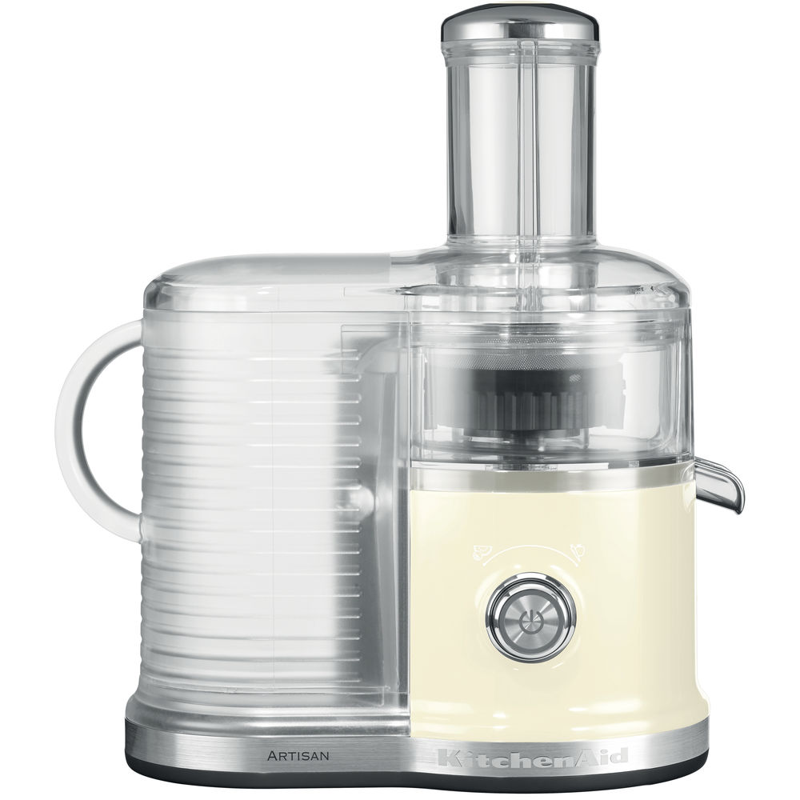

Соковыжиматель BORK S800 VS KitchenAid 5KVJ0333
Современная техника отличается от ретро тем, что экономит самое ценное на сегодняшний день – время. Ретро дизайн - это на любителя, а вот ретро технологии это вчерашний, а быть может и позавчерашний день.
KitchenAid 5KVJ0333
Преимущества KitchenAid, которые пытаются продать:
- Дизайн и выбор цветов
- Срок гарантии 2 года
- Международная компания, на рынке с 1919 года
- KitchenAid переводится, как кухонный помощник
- Использование толкателя в качестве контейнера для хранения сока
- Регулировка количества мякоти в соке
Примечание: Конструкция устройства для регулировки количества мякоти выглядит ненадёжно и добавляет вибрацию при работе.
Характеристики KitchenAid:
- Потребляемая мощность: 500 Вт
- Объём чаши: 4,83 л
- Количество скоростей: 2
- Количество оборотов: 7000 - 10000 об/мин
- Диаметр загрузочного желоба: 80 мм
- Объём стакана для сока 1 л
- Способ изготовления сетки фильтра: штамповка
- Материал сокоприёмника: пластик
Преимущества соковыжимателя BORK S800:
- Высокая мощность и электронный стабилизатор оборотов соковыжимателя BORK сводит к минимуму потери оборотов ножей при работе с продуктами
- Уникальная мелкоячеистая сетка, выполненная методом лазерной перфорации, обеспечит максимальную прозрачность и чистоту сока
- Покрытие из нитрида титана продлит срок службы ножей
- Широкий диапазон оборотов соковыжимателя BORK (6500 - 13000 об/мин) обеспечит: максимальное количество сока как на низких оборотах при работе с мягкими продуктами, так и на высоких оборотах при работе с твёрдыми продуктами
- Загрузочный желоб из нержавеющей стали диаметром 84 мм, надёжен и избавит пользователя от чрезмерного измельчения продукта перед отжимом
- Насадка для отжима сока в стакан обеспечит чистоту и комфорт при использовании соковыжимателя
- Возможность установки альтернативного контейнера для жмыха (пакет, коробка), обеспечит комфорт при работе с большим количеством продуктов
- Защита двигателя от перегрузки, плавный пуск двигателя и защита от перегрева избавит соковыжиматель от перепадов напряжения и продлит срок его службы
- Сокоприёмник из нержавеющей стали, надёжный и простой в уходе, фиксируется при помощи зажима (у KitchenAid фиксация поворотом)
Покупая KitchenAid, вы покупаете не только ретро дизайн, но и ретро технологии.